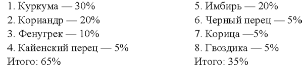
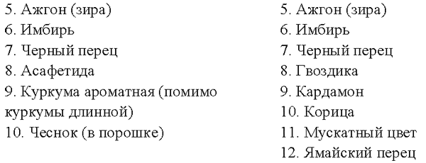
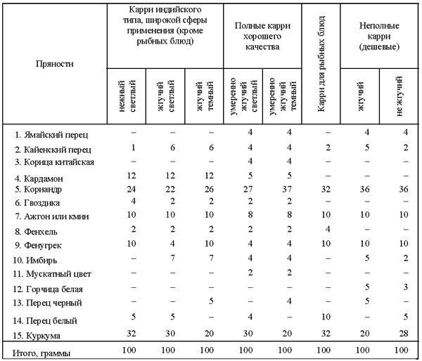
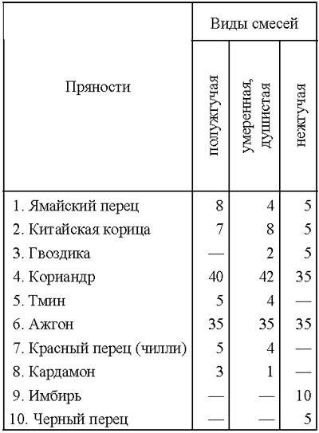
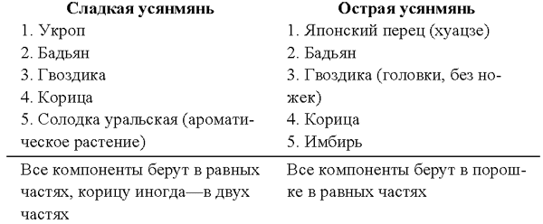
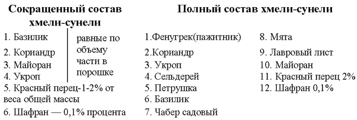
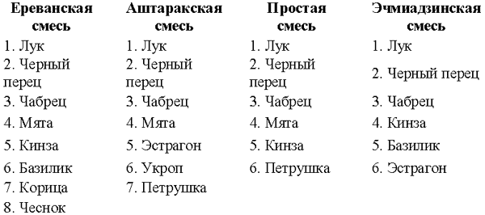

Смеси, или комбинации пряностей

Наряду с отдельными пряностями, которые порознь или в разных сочетаниях закладывают в пищу в процессе или в конце ее приготовления, в кулинарии применяются также сложные или составные пряности (смеси), заготавливаемые заранее из строго определенного числа компонентов, сочетаемых в строго неизменных пропорциях. Эти составные пряности представляют собой либо порошкообразную, либо пастообразную однородную смесь с собственным оригинальным запахом и вкусом, отличающим данную смесь как от всех остальных пряностей, так и от других смесей.
Смеси пряностей, во-первых, дают возможность расширить, разнообразить букет ароматов, создаваемых отдельно взятыми пряностями, а во-вторых, облегчают использование пряностей в процессе приготовления пищи, ускоряют создание различных блюд. Достаточно, например, добавить чанную ложку готовой суповой пряной смеси в бульон или так называемой сиамской смеси в картофельное пюре, чтобы получить совершенно новые блюда с оригинальным, не свойственным ни обычному бульону, ни картофелю ароматом.
Смеси пряностей были известны в глубокой древности. Их употребляли даже чаще, чем отдельные пряности. Древние греки и римляне очень ценили такие смеси, как г а р у м (для вторых блюд), суффумигиум москатум (кондитерская смесь), а из вышедших ныне из употребления пряностей — кост, нард и индийский орех и, наконец, смесь для так называемого вина Гиппократа, состоявшую из гвоздики, корицы, имбиря и райских зерен. С гибелью античного мира были утрачены точные рецепты многих смесей пряностей, вышли постепенно из употребления некоторые их компоненты. Поэтому в Европе смеси пряностей были распространены сравнительно слабо.
Однако на Востоке, начиная от Малой Азии и кончая Китаем и Японией, где культура употребления пряностей никогда не умирала и в течение веков продолжала все более совершенствоваться, были созданы и введены во всеобщее употребление многочисленные смеси пряностей, состав которых менялся в зависимости от природных условий, вкусов народов разных районов. Некоторые из смесей, повсеместно признанные удачными, получали чрезвычайно широкое географическое распространение: они перешагивали границы не только отдельных стран, но и континентов. Так произошло с известной индийской смесью, называемой карри, и отчасти с сиамской смесью десяти специй и с китайской смесью пяти специй (усянмянь).
Всемирное признание завоевала смесь карри. Из Индии она начала путешествие по всей Азии, от Адена до Иокогамы, а затем была завезена англичанами в Европу, Америку и Австралию. В настоящее время карри является самой распространенной смесью пряностей во всем мире и широко применяется не только в домашней кухне, но и в пищевой промышленности подавляющего большинства стран, в частности при производстве консервов, сухих суповых концентратов, а также для соусов карри. Большие количества этой смеси продаются на мировом рынке в виде порошка для использования в домашней кухне в качестве приправы к овощным, мясным и рисовым блюдам.
Постепенно создалось множество местных, национальных вариаций составов карри. Кроме того, после проникновения в Европу и Америку, состав карри варьировался применительно к европейским или американским вкусам — в зависимости от того, какая фирма его выпускала.
Так появились различные марки или виды карри, которые, несмотря на различия, все же обладают некоторыми общими чертами.
Порошки карри могут иметь различный состав не только по числу входящих в них пряностей, но и по их соотношению между собой. Таким образом, под псевдонимом карри могут скрываться весьма разнообразные смеси пряностей.
В состав карри обычно входят от 7 до 12 и даже до 20—24 компонентов. Однако непременной составной частью карри должен быть лист карри, то есть лист растения Мурреи Кенига, который самостоятельно не применяется, а также порошок корней куркумы. В некоторых странах Востока, а также Европы и Америки, где по местным условиям нельзя достать лист карри, его заменяют фенугреком; наличие в смесях пряностей фенугрека и куркумы уже служит признаком карри. В Европе, однако, долгое время считали, что куркума является основным компонентом карри. На самом деле наряду с куркумой, действительно составляющей от 20 до 30% любой смеси карри, наиболее важными и постоянными компонентами карри являются кориандр (от 20 до 50% карри), а также фенугрек (от 5 до 10%) и красный перец, чаще всего кайенский (от 1 до 6%). Таким образом, для получения карри любого состава надо иметь в первую очередь эти четыре пряности: кориандр, куркуму, фенугрек и красный перец. Вместе они составляют от 46 до 96% порошка карри, в то время как остальные 10—15 компонентов составляют в общей сложности от 4 до 54% в различных составах карри и призваны, обычно, дать этой пряной смеси тот или иной оттенок аромата, нанесенный на неизменную основу из четырех указанных пряностей. Все они имеются в нашей стране, поэтому приготовление порошка карри вполне возможно у нас как в промышленных, так и домашних условиях.
Приведем несколько вариантов состава карри.
Восточноевропейский карри (грубый резкий).
Используется чаще всего в консервной промышленности.
Западноевропейский карри (нежный, простой).
Используется в пищевой промышленности и домашней кухне. Его состав:

Как изменяется состав карри на Среднем Востоке, в Западной Индии и Западном Пакистане, видно из того, что в него кроме четырех основных компонентов входит еще какой-либо из нижеследующих составов:

Первый из этих карри употребляет преимущественно сельское население и простой люд, второй—главным образом городское население, причем зажиточные слои.
Еще богаче и разнообразнее по составу, а следовательно, и по ароматическому букету южно-азиатский карри, применяемый в Южной и Восточной Индии, Восточном Пакистане, Бирме, Индокитае, Индонезии и Малайе. Это так называемый полный карри, куда входят кроме четырех основных следующие пряности:
Таким образом, в состав полного порошка карри входит до 20 пряностей, причем в некоторых местностях к ним добавляют еще 2—4 других.
Такой состав получается преимущественно при домашнем приготовлении пряностей. В пищевой промышленности стран Азии, Европы и Америки за последние десятилетия выработались некоторые стандарты порошков карри, максимально состоящие из 15 пряностей. Они различаются по остроте вкуса (жгучие и нежные), по цвету (темные и светлые) и по сфере применения (к мясу, овощам, рыбе, рису и т. д.). Некоторые из этих стандартных карри приведены ниже.

Во всех этих стандартизированных рецептах пятым обязательным компонентом выступает к м и н для европейских или ажгон (зира) для азиатских видов карри, поскольку эти пряности применяются в большинстве классических составов карри в странах Среднего Востока и Индии. Таким образом, для всех составов карри следует считать обязательным пять компонентов — кориандр, куркуму, фенугрек, красный перец и кмин[13] (или ажгон).
На основе порошка карри можно приготовить разнообразные соусы карри, которые надо рассматривать как готовые концентрированные приправы. В их состав кроме порошка карри входят в различной пропорции уксус, мука, соль и один из наполнителей — мясной бульон, яблочное, томатное или сливовое пюре, а иногда соя или гранатовый сок. В зависимости от состава соуса его можно употреблять в самые разнообразные блюда. Однако наличие уксуса делает соус карри более острым, резким по органолептическим свойствам и нередко ведет к ликвидации полезных диетических свойств пряностей, заключенных в порошках карри. Поэтому употребление порошка карри во много раз предпочтительнее некоторых соусов карри.
По сравнению с карри другие существующие смеси пряностей менее сложны по составу и имеют несравненно менее обширное географическое распространение, которое определяется национальным составом населения, древними культурными традициями, проявляемыми, в частности, в сохранении своеобразной культуры питания. Таковы, например, Индия, Бирма, Индокитай, Индонезия, Китай, а также наше Закавказье и отчасти Средняя Азия и Молдавия, где имеются свои национальные смеси пряностей.
В Индии и на Цейлоне помимо карри широко употребляют так называемые индийские смеси следующих составов[14]:

Характерной чертой индийских смесей является наличие в них большой доли тминоподобных пряностей (кориандр, ажгон, тмин), составляющих 70—80 % всей смеси.
Этим объясняется их незначительная жгучесть.
Столь же маложгучей является и сиамская смесь, широко распространенная в Таиланде, Камбодже, Восточной и Южной Бирме, а также в других странах Индокитая (Лаос, Южный Вьетнам, ДРВ). В состав сиамской смеси входят 10—11 пряностей, причем одна из них — лук шалот, может присутствовать в смеси как в сухом, так и добавляться туда в свежем виде непосредственно перед ее применением, что делается чаще всего. Шалот составляет как бы базу смеси и должен в свежем виде в 10 раз превышать смесь по весу или объему (например, на 1 чайную ложку сухой сиамской смеси надо добавить 10 чайных ложек мелкошинкованного лука шалота). Поэтому практически в сиамскую смесь в сухом виде входят 10 пряностей:
Сиамская смесь1. Чеснок (в порошке)
2. Фенхель
3. Анис
4. Бадьян
5. Куркума
6. Мускатный цвет
7. Черный перец
Все пряности берут в равных частях (например, по одной чайной ложке порошка). Мускатный цвет можно заменить мускатным орехом, фенхель — укропом. Затем к ним добавляют еще три пряности
8. Красный перец (две части)
9. Петрушка (семена или лист, тертые в порошок; половину части)
10. Кардамон (половину части)
Сиамская смесь представляет собой ароматный, своеобразного тембра и запаха порошок, со слабой, приятной жгучестью. Употребляют ее в картофельные, мясные, рисовые блюда, а также в тесто, причем обязательно в сочетании с луком шалотом, который предварительно томят в растительном масле, а затем в лук всыпают и тщательно размешивают сиамскую смесь. Смесь «действует» только в слегка подогретом виде, будучи распыленной в луковом соке. Употреблять ее, как, например черный перец, в сухом виде, посыпая ею готовое блюдо, нельзя.
Наконец, совершенно лишена жгучести китайская смесь усянмянь, известная в двух вариантах:

Усянмянь добавляют в блюда из мяса (баранина, свинина, говядина) и особенно из домашней птицы (куры, утки, индейки, фазаны), которым она придает специфический, слегка сладковатый вкус. Хороша усянмянь и для сдабривания фруктовых горячих блюд и кондитерских изделий, а также блюд из моллюсков, хотя, на наш вкус, она для этого недостаточно остра.
Если перечисленными видами пряных смесей пользуются сотни миллионов людей во всем мире и, прежде всего в Азии, то гораздо более ограниченное распространение имеют национальные пряные смеси, применяемые в нашей стране в первую очередь на Кавказе и в Средней Азии. На территории Закавказья, главным образом в Грузин к Армении, распространены две разновидности пряных смесей — хмели-сунели и аджика. Первая — сухая, вторая — пастообразная смесь.

Хмели-сунели используют в харчо, сациви и другие блюда грузинской кухни. Смесь должна быть зеленоватого цвета.
Состав аджики:
1. Хмели-сунели —3 части
2. Красный перец —2 части
3. Чеснок — 1 часть
4. Кориандр — 1 часть
5. Укроп —1 часть
К этой смеси сухих пряностей добавляют немного соли и винного уксуса крепостью не выше 3—4% так, чтобы получилась влажная густая паста, хорошо приспособленная для длительного хранения в плотно закупоренной стеклянной или керамической посуде.
Аджику используют как готовую приправу к рисовым, овощным, мясным блюдам, а также в супы после их готовности. В Закавказье аджику постоянно употребляют с отварной фасолью (грузинское национальное блюдо л о б и о).
В Армении, с ее древнейшей культурой питания, в разных районах употребляют разный набор пряностей для приготовления национального блюда долма (толма):

Как видим, излюбленными пряностями армянской кухни являются кинза, мята, эстрагон, базилик, чабрец.
В Молдавии и соседних с нею Румынии и Болгарии широко употребляют постоянные традиционные смеси пряностей из трех, пяти и семи (иногда восьми) компонентов, применяемые для сдабривания горячих овощных и мясных блюд, при мариновании овощей и фруктов и для подготовки мяса либо к длительному хранению, либо к использованию в национальной кухне (предварительное маринование).
Приведем наиболее популярные рецепты смесей молдавской и румынской кухни (соотношения даны в расчете на закладку двух порций основного продукта).